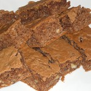

Home
Blondies
From Sue Bush at AllRecipes

Blondies
This cookie is a delicious cross between a brownie and a chocolate chip cookie. It's every bit as delicious as it sounds.
Ingredients
- 1 cup sifted all-purpose flour
- 1/2 teaspoon baking powder
- 1/2 teaspoon salt
- 1/8 teaspoon baking soda
- 1/2 cup chopped walnuts
- 1 cup packed brown sugar
- 1/3 cup butter, melted
- 1 large egg, beaten
- 1 tablespoon vanilla extract
- 2/3 cup semisweet chocolate chips
Steps
- Gather the ingredients and preheat oven to 350 deg F. Grease a 9x9 baking pan.
- Sift together sifted flour, baking powder, salt, and baking soda in a medium bowl. Stir in chopped nuts; set aside.
- Mix brown sugar and melted butter in a large bowl until combined; cool slightly.
- Stir beaten egg and vanilla into brown sugar mixture. Add flour mixture, a little at a time, mixing just until combined. Spread batter into the prepared baking pan. Sprinkle chocolate chips on top.
- Bake in the preheated oven until a toothpick inserted in the center comes out clean, 20 to 25 minutes.